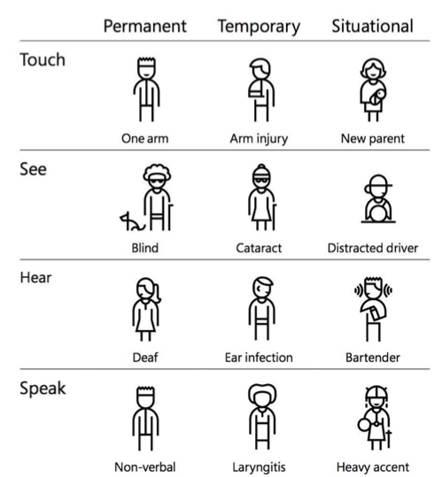

Social sustainability
Social sustainability is another way to work with sustainability. With a focus on social sustainability you also have a focus on inclusive design and accessibility. With inclusive design you create products and services that understand and enable people of all backgrounds and abilities. This focus can also have a positive impact at the user experience of the product or service.
Up to 20% of the population have challenges online, why it is important to design your digital products and services with their disability in mind. Disabilities can be permanent, temporary or situational and can affect different senses. This is visualised below.

Infographic of different disabilities in relation to senses and time frame (Microsoft, 2021)
WCAG (Web Content Accessibility Guidelines)
The Wide Web Consortium (W3C) has developed WCAG which includes a wide range of recommendations for making web content more accessible. The guidelines are divided into four main principles. These principles are Perceivable, Operable, Understandable and Robust. The WCAG is categorised into three levels of conformance: A (lowest), AA (mid range) and AAA (highest). From June 1, 2025, all companies have to meet the standard of AA. This requires the companies to follow this standard but also the design agencies to develop products and services that follow this standard.
How do the design agencies work with WCAG?
At the moment it varies a lot how much the design agencies have incorporated WCAG in their work. Some of the recommendations are incorporated naturally due to design principles. Most of the design agencies are working with contrast in relation to colours, size, shapes etc. But it is not only about the design agencies it is also about their clients. To incorporate the WCAG costs time and money, why some of the clients do not prioritise accessibility for their digital products and services. The design agencies explore that their smaller clients like startups are not that interested in accessibility, where the bigger and more international clients have a focus at it.
How to work with WCAG in the future?
To design your product or service for the best accessibility, you have to understand your users and their needs. User research and testing will therefore be an important part of your process.
It is important to work with a hierarchy and a structure in your design - both for the visual design that the users are able to see but also in the coding of HTML, CSS, JS etc. This will have an impact for the users who use screen readers. Another important element for users who use screen readers is the alternative text for images. By adding an alt attribute for the images, the users with a disability of seeing, will be able to know, what the images represent.